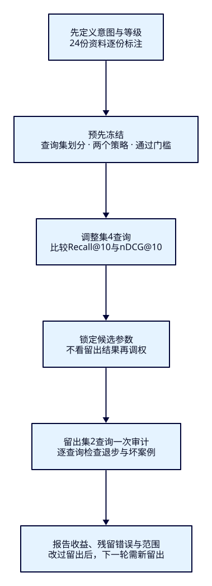
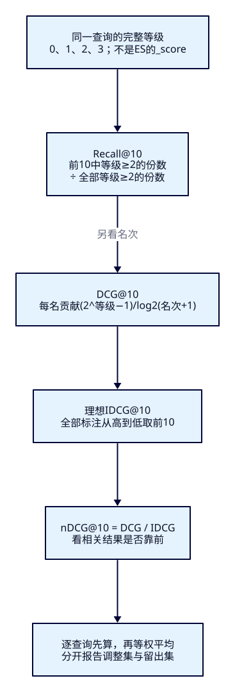

调了权重，
怎样证明搜索变好了？
运营看到“西湖 夜游”的游船提前，准备接受名称加权。另一个游客想拍真实湖景，名称恰好匹配的摄影展厅却仍排第一。F22把判断从一张截图扩到一组需求：先写什么算相关，再让同一份标注检验基线与候选，报告改善、退步和没有解决的错误。
学完能用输出证明什么
- 区分查询意图、人工相关等级和ES分数，交付完整查询集、划分与标注口径。
- 从真实前10的ID手算Recall@10与nDCG@10，对照_rank_eval和Java，发现未标注与单查询失败。
- 冻结候选后审计留出集，选择本批策略并解释残留坏例；独立诊断两条未逐步演示的新需求。
本课目录
图解跳转：01 · 调整与留出 · 02 · 两个指标
1. ES负责执行排序，相关不相关由需求决定
ES根据词项、字段和查询计算_score；它不知道游客想乘船，还是只想了解游船历史。增加名称权重可能让码头提前，也可能奖励名叫“夜游纪念品店”的商店。分数变大不是质量变好，不同DSL的分数均值也不是可比较的质量指标。
本课评价的是“把用户输入翻译成查询”的策略。基线与候选必须使用相同文档快照、硬条件、查询和人工标准，否则变化可能来自资料更新或样本换了。先为每条查询写清需求，再评价每份资料；不能照着当前排序给标签。真实系统还应覆盖查询频率、长尾、城市、无结果、筛选与排序意图，本课只用小而可审计的虚构集合练习方法，不把它称作代表全站的抽样。
2. 一条查询对应一份判断，先分组再试参数
24份固定资料中，a01–a20符合HZ/open/CNY/0至10000分；另四份分别闭园、异城、超预算、异币种，固定判0并由filter排除。所有合格资料都含“西湖”，本课OR查询均有20个候选、返回10个。这样能分清“没进入候选”和“排到第11名以后”，并使主实验的两个nDCG口径一致。
| 资料ID | 资料角色 | 为何不能只看名字 |
|---|---|---|
| a01–a03 / a06 | 三种夜间游船 / 白天游船码头 | 均可乘船，白天码头不直接满足夜游 |
| a04 / a05 / a20 | 湖畔步道 / 白堤 / 苏堤 | 免费湖岸散步、实景摄影；苏堤有桥边描述 |
| a07 | 游船文化馆 | 室内历史模型，不提供乘船 |
| a08 / a09 / a13 | 水族馆 / 博物馆 / 科学馆 | 室内科普，可供雨天亲子活动 |
| a10 / a11 / a15 | 摄影展厅 / 散步用品店 / 夜游纪念品店 | 名称很像需求，活动却不同 |
| a12 / a14 / a16–a19 | 手作、乐园、导览站、茶室、山林、观景台 | 预约、晴天、仅发地图、仅休息、陡坡或需乘船等限制 |
人工等级用0–3：3直接满足意图；2满足主要需要但有次要限制；1只作补充；0不满足或不合硬条件。Recall把等级≥2算相关，nDCG保留四级差别。因此1级对nDCG有一点贡献，却不进本课Recall分子。等级描述的是特定需求；a10对“拍真实湖景”判0，对“雨天室内活动”可判2，不能给文档一个永久相关分。
完整标注是24份×8查询，共192个显式等级，0不是漏填。4条调整查询分别围绕夜游、游船、雨天、亲子；2条留出查询检验实景摄影与免费湖岸散步；另2条独立结业任务不在正文展示输入与次序。标签由本课作者一人按固定意图编写，没有双人独立标注或一致性统计。真实项目宜让标注者看资料而不看策略名/当前名次，对分歧复核，并保留标签版本与理由。

决策计划在首次ES实验前冻结：候选仅加名称AND权重2、名称短语权重4，硬资格不变。调整集平均nDCG至少增0.01且Recall不降；冻结候选后，留出两平均指标不降，任何单查询nDCG下降不超过0.05。阈值是本课教学选择，不是ES默认或统计显著性标准。分组按意图设计，相关意图仍会泄漏；两条留出不能支撑总体效果的置信结论。
3. Recall看找回多少，nDCG看好结果靠不靠前
对于查询q，令R是这份完整标注中等级≥2的文档集合。Recall@10=前10命中R的份数÷|R|，分母不是10，也不是ES的total。本课“西湖 夜游”有6份二值相关资料，基线前10全部找回，Recall=6/6=1；即使第一个是商店，也不会因此降Recall。若只有部分池化标注，这个分母只能反映已知相关资料，不能冒称全库召回率。
nDCG关注名次：第i名、人工等级g的贡献是(2g−1)/log2(i+1)，从i=1累计到第10名得到DCG。再把全部标注按等级降序取前10，计算理想IDCG；nDCG=DCG/IDCG。缺少的返回位置贡献0；本课标准IDCG始终由全部标注决定，与实际返回几份无关。高等级靠后会被折扣，0级无贡献。

夜游基线的前10等级为[0,0,2,2,1,3,3,3,2,0]，DCG=11.117010，IDCG=19.086516，nDCG=0.582454。候选变为[0,3,3,3,0,2,2,1,2,0]，nDCG=0.744946；两者Recall仍是1。先逐查询计算，再在同一分组等权平均，称宏平均。不是将所有查询的命中分子与分母拼起来，也不是按结果条数加权；真实流量加权必须另行固定权重与来源。
没有任何相关资料的查询，Recall分母为0、IDCG也可能为0。本课单列这类查询而不混入主平均，探针中按0报告，不能说“没有该找的，所以满分”。空结果与未标注也不同：前者是搜索结果，后者是评价证据不完整。
4. f22-c01：固定语料与实验快照
独立ES9.4.0/Lucene10.4.0单节点19222，索引tut-f22-attractions，一主零副本、strict、refresh=-1，无插件。name/description均为whitespace/lowercase、显式BM25；空格已给出中文整词，本课不重评中文分词器。Bulk用create、显式refresh；重做前点名清理，避免旧数据和重写结果混入。下面从仓库根目录开始：
cd projects/travel-search
export ES_URL=http://127.0.0.1:19222
export APP_URL=http://127.0.0.1:18081
docker compose -f infra/f22/compose.yaml up -d es
bash infra/f22/wait.sh
# 已有本课索引先cleanup，再从01重做
bash labs/f22/01-prepare.sh完整settings/mapping与环境约束
{
"settings": {
"number_of_shards": 1,
"number_of_replicas": 0,
"refresh_interval": "-1",
"analysis": {
"analyzer": {
"lesson_words": {
"type": "custom",
"tokenizer": "whitespace",
"filter": [
"lowercase"
]
}
}
},
"similarity": {
"lesson_bm25": {
"type": "BM25",
"k1": 1.2,
"b": 0.75,
"discount_overlaps": true
}
}
},
"mappings": {
"dynamic": "strict",
"properties": {
"attraction_id": {
"type": "keyword"
},
"city_code": {
"type": "keyword"
},
"status": {
"type": "keyword"
},
"currency": {
"type": "keyword"
},
"name": {
"type": "text",
"analyzer": "lesson_words",
"similarity": "lesson_bm25"
},
"description": {
"type": "text",
"analyzer": "lesson_words",
"similarity": "lesson_bm25"
},
"ticket_price_fen": {
"type": "integer"
}
}
}
}01的9次HTTP依次核对版本、插件、创建、green、Bulk24项created/errors=false、refresh、count24、mapping、settings。四份资格反例仍在索引中，只有搜索结果排除它们。Compose仅回环端口且关闭安全，供隔离教学，不是线上运行配置。
5. 基线与候选：只改名称奖励
基线用best_fields搜索name与description、OR匹配。候选沿用同一个must，再把名称AND和名称短语作为可选奖励，minimum_should_match=0。它不能让原本不匹配的文档靠奖励进入；两种策略均按_score降序、attraction_id升序收尾，打破平分。这里比较的是评分策略，不是同时改分词器、资料和预算。
{
"size": 10,
"track_total_hits": true,
"query": {
"bool": {
"must": [
{
"multi_match": {
"query": "西湖 夜游",
"fields": [
"name",
"description"
],
"type": "best_fields",
"operator": "or"
}
}
],
"filter": [
{
"term": {
"city_code": {
"value": "HZ"
}
}
},
{
"term": {
"status": {
"value": "open"
}
}
},
{
"term": {
"currency": {
"value": "CNY"
}
}
},
{
"range": {
"ticket_price_fen": {
"gte": 0,
"lte": 10000
}
}
}
],
"minimum_should_match": "0",
"should": [
{
"match": {
"name": {
"query": "西湖 夜游",
"operator": "and",
"boost": 2
}
}
},
{
"match_phrase": {
"name": {
"query": "西湖 夜游",
"boost": 4
}
}
}
]
}
},
"sort": [
{
"_score": {
"order": "desc"
}
},
{
"attraction_id": {
"order": "asc"
}
}
]
}用官方_rank_eval可把多条搜索请求、每条的ratings和一个指标交给ES。下例保留一个完整查询与24份判断。metric.dcg.normalize=true才计算归一化DCG，k=10强制评估前10；不是把search.size当唯一依据。unknown_doc_rating=0只是本例的计算约定，仍必须检查unrated_docs为空，不能拿这个参数掩盖漏标。
{
"requests": [
{
"id": "a-night",
"request": {
"size": 10,
"track_total_hits": true,
"query": {
"bool": {
"must": [
{
"multi_match": {
"query": "西湖 夜游",
"fields": [
"name",
"description"
],
"type": "best_fields",
"operator": "or"
}
}
],
"filter": [
{
"term": {
"city_code": {
"value": "HZ"
}
}
},
{
"term": {
"status": {
"value": "open"
}
}
},
{
"term": {
"currency": {
"value": "CNY"
}
}
},
{
"range": {
"ticket_price_fen": {
"gte": 0,
"lte": 10000
}
}
}
],
"minimum_should_match": "0",
"should": [
{
"match": {
"name": {
"query": "西湖 夜游",
"operator": "and",
"boost": 2
}
}
},
{
"match_phrase": {
"name": {
"query": "西湖 夜游",
"boost": 4
}
}
}
]
}
},
"sort": [
{
"_score": {
"order": "desc"
}
},
{
"attraction_id": {
"order": "asc"
}
}
]
},
"ratings": [
{"_index": "tut-f22-attractions", "_id": "a01", "rating": 3},
{"_index": "tut-f22-attractions", "_id": "a02", "rating": 3},
{"_index": "tut-f22-attractions", "_id": "a03", "rating": 3},
{"_index": "tut-f22-attractions", "_id": "a04", "rating": 2},
{"_index": "tut-f22-attractions", "_id": "a05", "rating": 2},
{"_index": "tut-f22-attractions", "_id": "a06", "rating": 0},
{"_index": "tut-f22-attractions", "_id": "a07", "rating": 0},
{"_index": "tut-f22-attractions", "_id": "a08", "rating": 0},
{"_index": "tut-f22-attractions", "_id": "a09", "rating": 0},
{"_index": "tut-f22-attractions", "_id": "a10", "rating": 0},
{"_index": "tut-f22-attractions", "_id": "a11", "rating": 0},
{"_index": "tut-f22-attractions", "_id": "a12", "rating": 0},
{"_index": "tut-f22-attractions", "_id": "a13", "rating": 0},
{"_index": "tut-f22-attractions", "_id": "a14", "rating": 0},
{"_index": "tut-f22-attractions", "_id": "a15", "rating": 0},
{"_index": "tut-f22-attractions", "_id": "a16", "rating": 0},
{"_index": "tut-f22-attractions", "_id": "a17", "rating": 1},
{"_index": "tut-f22-attractions", "_id": "a18", "rating": 0},
{"_index": "tut-f22-attractions", "_id": "a19", "rating": 1},
{"_index": "tut-f22-attractions", "_id": "a20", "rating": 2},
{"_index": "tut-f22-attractions", "_id": "x-closed", "rating": 0},
{"_index": "tut-f22-attractions", "_id": "x-city", "rating": 0},
{"_index": "tut-f22-attractions", "_id": "x-budget", "rating": 0},
{"_index": "tut-f22-attractions", "_id": "x-currency", "rating": 0}
]
}
],
"metric": {
"dcg": {
"k": 10,
"normalize": true,
"unknown_doc_rating": 0
}
}
}评Recall时用完整请求中的"metric":{"recall":{"k":10,"relevant_rating_threshold":2}}；两个完整调整集请求随工程交付。先预测游船能上升几位，再运行：
bash labs/f22/02-adjust.sh| 调整查询 | 基线nDCG | 候选nDCG | 两者Recall |
|---|---|---|---|
| 夜游 | 0.582454 | 0.744946 | 1 |
| 游船 | 0.678241 | 0.759009 | 1 |
| 雨天 | 0.852576 | 0.852576 | 4/6 |
| 亲子 | 0.959829 | 0.959829 | 1 |
| 宏平均 | 0.768275 | 0.829090 | 0.916667 |
这是本课两轮真实输出，显示保留六位小数，断言用完整数值。调整平均nDCG增加0.060815、Recall不变，候选通过预定调整门槛。不过夜游a15纪念品店仍第一，游船a07文化馆仍第一；“前几名更好”与“首位已经正确”是不同结论。雨天6份相关资料只返回4份：另两份不是索引里不存在，而是没有挤进前10。
6. f22-c02：留出不是另一轮调参数的提示卡
bash labs/f22/03-holdout.sh
bash labs/f22/04-boundaries.sh| 留出查询意图 | 基线→候选nDCG | 基线→候选Recall | 残留坏例 |
|---|---|---|---|
| 拍真实湖景 | 0.745815→0.745815 | 7/8→7/8 | a10摄影展厅仍第一，0级 |
| 免费湖岸散步 | 0.717391→0.717391 | 1→1 | a11用品店仍第一，0级 |
| 宏平均 | 0.731603→0.731603 | 0.937500→0.937500 | 无新增指标退步，也无改善 |
候选通过本课冻结的相对门槛，可以选为这份固定教学语料的后续比较策略；证据不足以宣布全站上线。收益仅观察在调整集两查询，留出没有观察到收益，也没有观察到退步。门槛容许原有坏例继续存在，故“通过相对回归”不等于达到产品的绝对质量要求。
下一步可提出区分“真实活动”和“商品/展览”的资料字段或查询意图方案，再做新的调整实验；本课不直接改标签、删掉难例来抬分。若现在看着摄影与散步结果反复改权重，这两条就成为调整材料，下一轮需要新留出。相似意图、同一批文档、作者单人标签和极小查询数都限制结论，离线指标也不能代替真实游客反馈或线上受控实验。
7. 三类坏案例，要用不同办法定位
第一类是候选漏召回：04临时把雨天检索缩到name且AND，只剩a09。水族馆与科学馆没有完整名称词，后来加再多奖励也救不回；恢复多字段OR后回到20候选。第二类是Top10漏召回：雨天的两份相关资料已在20候选内，只是排得靠后。第三类是误入前列：商店和展厅满足词面却不满足意图，应先核对标签/资料语义，再决定召回、权重或业务条件，不能把所有问题都叫分词不好。
评价流程自身也要回归。04去掉当前第一名a15的标签，ES仍返回HTTP200，但unrated_docs明确列出它；本课判评价不完整。把另一个查询故意写成非法数值条件，_rank_eval也可能HTTP200并带failures，平均只剩成功查询；必须同时要求failures为空、details查询ID齐全、unrated_docs为空。本例dcg的k=0在9.4.0合法且返回0，本课用k=-1触发400，然后恢复合法请求；错误不能靠刷新页面掩盖。
固定源码DiscountedCumulativeGain.evaluate把理想序列截到实际返回份数。只返回a01/a02、完整标注含三份3级文档时，ES给1；本课固定完整IDCG@10则为0.765361，因为第三份没找回。不能将两个数混为同一口径。八条主查询都返回10份，故REST内置值、Python与Java在主实验一致。空结果与全0等级探针均给0，单列而不进入主平均。
8. Java复用完整查询，独立计算指标
Java用官方客户端发出与REST一致的SearchRequest，每条查询都带相同filter和稳定收尾键。标注来自同一个evaluation.json，在构建时装入jar；浏览器不能提交标签或任意DSL。核心查询与公式如下：IDCG从全部标注取前10，不随返回条数缩短。
public SearchRequest request(Task task, String strategy) {
var bool = new BoolQuery.Builder()
.must(q -> q.multiMatch(m -> m.query(task.text()).fields("name", "description")
.type(TextQueryType.BestFields).operator(Operator.Or)))
.filter(q -> q.term(t -> t.field("city_code").value("HZ")))
.filter(q -> q.term(t -> t.field("status").value("open")))
.filter(q -> q.term(t -> t.field("currency").value("CNY")))
.filter(q -> q.range(r -> r.number(n -> n.field("ticket_price_fen").gte(0.0).lte(10000.0))))
.minimumShouldMatch("0");
if (strategy.equals("candidate")) {
bool.should(q -> q.match(m -> m.field("name").query(task.text()).operator(Operator.And).boost(2.0f)));
bool.should(q -> q.matchPhrase(m -> m.field("name").query(task.text()).boost(4.0f)));
}
return new SearchRequest.Builder().index(INDEX).size(K).trackTotalHits(t -> t.enabled(true))
.query(q -> q.bool(bool.build()))
.sort(s -> s.score(v -> v.order(SortOrder.Desc)))
.sort(s -> s.field(f -> f.field("attraction_id").order(SortOrder.Asc))).build();
}
private double dcg(List<Integer> grades) {
double value = 0;
for (int i = 0; i < grades.size(); i++)
value += (Math.pow(2, grades.get(i)) - 1) / (Math.log(i + 2) / Math.log(2));
return value;
}
public Metrics metrics(List<Integer> grades, Map<String, Integer> ratings) {
long relevant = ratings.values().stream().filter(g -> g >= 2).count();
long retrieved = grades.stream().filter(g -> g >= 2).count();
// Standard IDCG@10 uses all judged documents, independent of the returned length.
double ideal = dcg(ratings.values().stream().sorted(Comparator.reverseOrder()).limit(K).toList());
double actual = dcg(grades);
return new Metrics(relevant == 0 ? 0 : (double) retrieved / relevant,
ideal == 0 ? 0 : actual / ideal, actual, ideal, relevant, retrieved);
}
评估循环核对超时、分片失败、总数关系、原文硬条件、业务ID、完整字段和标签覆盖，任何不完整结果返回502，不能继续产出“平均提高”。_score只用于观察ES排序，Java不会把它代入等级公式。
public Result evaluate(QualityInput input) throws IOException {
var tasks = fixture.queries().stream().filter(q -> q.split().equals(input.split())).toList();
var rows = new ArrayList<Row>();
for (var task : tasks) {
var request = request(task, input.strategy());
var response = client.search(request, QualityAttraction.class);
if (response.timedOut() || response.shards().failed().longValue() != 0
|| response.hits().total() == null
|| !response.hits().total().relation().jsonValue().equals("eq"))
throw new AttractionSearchService.IncompleteSearchException();
var ids = new ArrayList<String>();
var grades = new ArrayList<Integer>();
for (var hit : response.hits().hits()) {
var source = hit.source();
if (source == null || !hit.id().equals(source.attractionId()) || source.name() == null
|| source.description() == null || !"HZ".equals(source.cityCode())
|| !"open".equals(source.status()) || !"CNY".equals(source.currency())
|| source.ticketPriceFen() == null || source.ticketPriceFen() < 0
|| source.ticketPriceFen() > 10000 || hit.score() == null || hit.sort().size() != 2
|| !task.ratings().containsKey(hit.id()))
throw new AttractionSearchService.IncompleteSearchException();
ids.add(hit.id());
grades.add(task.ratings().get(hit.id()));
}
if (new HashSet<>(ids).size() != ids.size())
throw new AttractionSearchService.IncompleteSearchException();
var metric = metrics(grades, task.ratings());
rows.add(new Row(task.id(), task.text(), task.intent(), ids, grades,
metric.recall(), metric.ndcg(), metric.dcg(), metric.ideal_dcg(),
metric.relevant_docs(), metric.relevant_retrieved(), response.hits().total().value(),
tree(request), tree(response)));
}
if (rows.isEmpty()) throw new AttractionSearchService.IncompleteSearchException();
return new Result(input, fixture.version(), K, 2,
Map.of("recall", rows.stream().mapToDouble(Row::recall).average().orElseThrow(),
"ndcg", rows.stream().mapToDouble(Row::ndcg).average().orElseThrow()), rows);
}ES拒绝请求映射502，连接或transport异常映射503，非法输入400。多个查询依次执行，不是一次原子快照；本课用不变语料保证可比，不能在资料持续更新时直接套同样结论。完整通用工程见锁定pom与启动入口。
cd projects/travel-search/backend
# JAVA_HOME/PATH先选JDK25
./mvnw -B -ntp clean package
ES_URL=http://127.0.0.1:19222 APP_PORT=18081 java -jar target/travel-search-0.7.0.jarbash labs/f22/05-java.sh
# 可选手工调用，不计70条教学HTTP
curl --fail-with-body -sS -X POST "$APP_URL/api/quality/evaluate" -H 'Content-Type: application/json' --data '{"split":"adjust","strategy":"candidate"}'9. 在本机窗口核对，不凭卡片观感下结论
打开http://127.0.0.1:18081/f22.html，先选调整集基线，记下平均与夜游前10；再切候选，观察a01–a03上升而a15仍第一。切留出摄影与散步，核对0级首位、每条指标以及完整DSL/ES响应。切换条件或失败会清空旧结果；恢复后必须重新提交。实际路径是浏览器→本机Java→ES，Pages只提供本文与图解，不保存凭据，也不要求读者开发前端。
10. f22-c03：实用搜索独立结业
打开独立任务，其中两条需求没有在正文逐步演示。先保存自己的相关资料判断、问题分类、修改假设与预期取舍，再看参考结果；不要先选观察窗的assessment或运行揭示脚本。完成后用下面入口核对本课两个固定策略，不提供替你写好的新策略：
bash labs/f22/06-assessment.sh交付应有版本/快照、查询与意图、完整标签依据、基线/改法DSL、逐查询ID/等级/两个指标、好例与坏例、留出使用记录、选择结论和限制。先区分进入候选、挤进前10、相关结果前移三个目标。提出的改法要自己实现并复现，不能把运行现成脚本当成独立完成。下一阶段搜索对象改为酒店与房型：一个酒店里多条条件是否来自同一房型，会先成为文档建模问题；F23尚未实施。
11. 清理、再做与实际范围
bash labs/f22/cleanup.sh
bash labs/f22/01-prepare.sh
bash labs/f22/02-adjust.sh
bash labs/f22/03-holdout.sh
bash labs/f22/04-boundaries.sh
bash labs/f22/05-java.sh
bash labs/f22/06-assessment.sh
# 结束后关闭自己启动的Java，再清理本课索引
bash labs/f22/cleanup.sh
docker compose -f infra/f22/compose.yaml stop escleanup只DELETE tut-f22-attractions并GET确认404，不删其他索引、卷或既有节点。重复建索引400、重复Bulk create每项409；请清理后从01重做，不忽略错误。70条教学HTTP=准备与调整21＋留出与边界19＋独立结业8＋Java/REST22；Java内部16次搜索、探活、清理、作者附加和浏览器调用另计。
真实两轮证据与内容、图解、HTTP/视觉证据分列。已验证的只是本课固定单节点资料、标注与策略；未测代表性流量、显著性、标注者一致性、性能、多节点、生产安全或持续更新。超时与部分分片失败保留代码防护，本课未构造这两种运行故障。
固定版本依据与必要源码入口
RecallAtK.evaluate/isRelevant：相关阈值为≥；DiscountedCumulativeGain.evaluate/computeDCG：指数增益、折扣、短结果理想长度；EvaluationMetric.combine：查询等权平均；TransportRankEvalAction：单查询失败与成功结果合成。四份本地与官方tag逐字节核对。应用Boot4.0.8/Temurin25.0.4.1+1/Java与Rest5 Client9.4.8/Wrapper3.3.4/Maven3.9.11；ES bundled JVM另记，不等于应用JDK。
能力检查
1. 夜游Recall=1，为什么第一名还能错？
Recall只看6份相关资料是否出现在前10，不关心先后。a15判0仍第一；nDCG能惩罚这个位置，但平均nDCG也不会自动满足“首位必须相关”的产品门槛。
2. 雨天Recall是4/6，能否说ES漏索引了两份？
不能。主查询20候选里有那两份，只是没进入前10。先看_source、文本匹配与完整候选，再决定改召回还是排序。
3. 1级为什么不计相关，却仍给nDCG贡献？
本课把二值阈值固定为2，而分级指标保留1级增益2¹−1=1。若业务另定阈值，必须基线和候选一起按新版本重新计算。
4. 每次看留出结果再调到通过，仍算留出吗？
不算本轮独立审计；它已参与选参。保留本次失败与迭代记录，下一轮另备未用于选参的需求，不通过换标签或删除难例作弊。
5. _rank_eval HTTP200就可接受平均吗？
还要failures为空、details查询ID完整、unrated_docs为空，并核对指标/标签版本与请求。成功查询的平均不能冒充完整查询集成绩。
6. 为什么两份3级命中会出现1与0.765361两种nDCG？
ES9.4.0内置归一化把理想长度截为实际两份；本课标准IDCG@10还考虑第三份3级资料。主查询返回10时两者一致，短结果需明确报告口径。
7. 这次应该选哪个策略，能宣布全站改善吗？
按预先门槛，可为固定教学语料选择candidate：调整平均增加0.060815且Recall不降，留出无观察退步；不能宣布全站改善。商店/展厅首位错误、两条留出、单人虚构标注和意图相关性都限制结论。
实际陷阱
0级是已判断不满足；缺标签是还不知道。删掉坏例标签可能让分母和理想序列改变，指标不再可比。unknown_doc_rating=0不免除覆盖检查。
不同查询的增减会抵消。分开报告调整/留出、逐查询差值与坏例；本轮没有观察到新增退步，也要报告已有首位错误没有消失。
阈值、K、增益、IDCG长度、标签、字段、分片与查询都影响结果。固定后再比较；短返回的ES归一化细节与持续变化资料必须另说。
速记
| 问题 | 本课证据 |
|---|---|
| 什么算好 | 每条意图＋24份显式等级；作者单人教学标注 |
| 找回多少 | Recall@10：前10中等级≥2 / 全部等级≥2 |
| 好结果是否靠前 | nDCG@10：分级折扣增益 / 完整标注理想前10 |
| 是否值得选择 | 预定门槛、冻结策略、留出逐查询、坏例与限制 |
| 本轮结论 | 调整有收益；留出无观察变化；选择仅限固定语料，坏首位仍在 |
先写判断标准，再用同一份证据比较；改善和没有解决的问题一起交付。